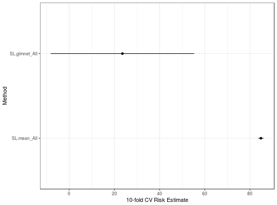

Does not include SuperLearner or Discrete SL results as that requires CV.SuperLearner to estimate the standard errors.
# S3 method for SuperLearner plot(x, Y = x$Y, constant = qnorm(0.975), sort = TRUE, ...)
| x | SuperLearner result object |
|---|---|
| Y | Outcome vector |
| constant | Multiplier of the standard error for confidence interval construction. |
| sort | If TRUE re-orders the results by risk estimate. |
| ... | Any remaining arguments (unused). |
plot object; print to display.
Polley EC, van der Laan MJ (2010) Super Learner in Prediction. U.C. Berkeley Division of Biostatistics Working Paper Series. Paper 226. http://biostats.bepress.com/ucbbiostat/paper266/
van der Laan, M. J., Polley, E. C. and Hubbard, A. E. (2007) Super Learner. Statistical Applications of Genetics and Molecular Biology, 6, article 25. http://www.degruyter.com/view/j/sagmb.2007.6.issue-1/sagmb.2007.6.1.1309/sagmb.2007.6.1.1309.xml
library(SuperLearner) library(ck37r) data(Boston, package = "MASS") set.seed(1) sl = SuperLearner(Boston$medv, subset(Boston, select = -medv), family = gaussian(), SL.library = c("SL.mean", "SL.glmnet"))#>#>#>sl#> #> Call: #> SuperLearner(Y = Boston$medv, X = subset(Boston, select = -medv), family = gaussian(), #> SL.library = c("SL.mean", "SL.glmnet")) #> #> #> Risk Coef #> SL.mean_All 84.83418 0.006114587 #> SL.glmnet_All 23.55172 0.993885413plot(sl, Y = Boston$chas)